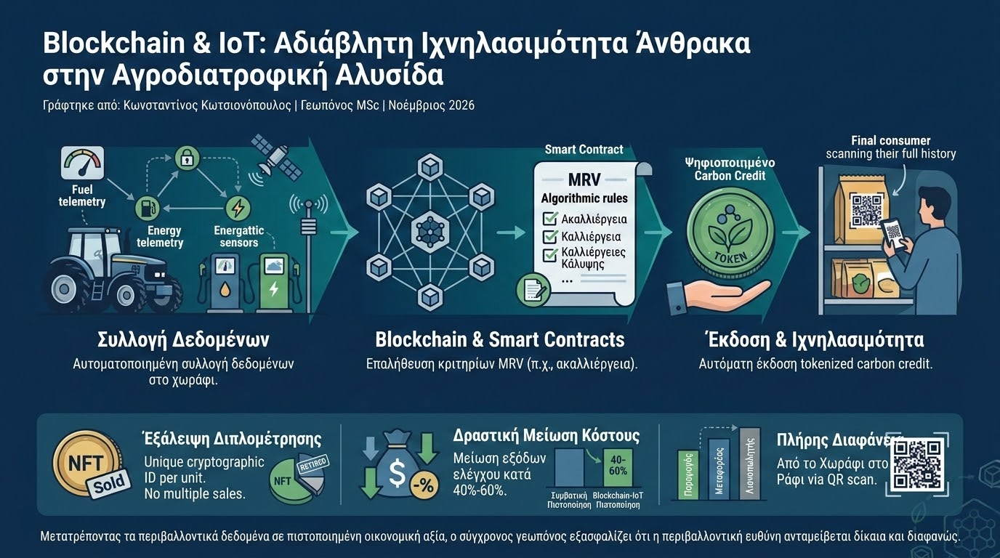

Η αυστηροποίηση των ευρωπαϊκών κανονισμών για τη δημοσιοποίηση δεικτών βιωσιμότητας (ESG) και η ανάπτυξη εθελοντικών αγορών άνθρακα (Voluntary Carbon Markets) έχουν θέσει τον αγροδιατροφικό τομέα στο επίκεντρο. Οι παραγωγοί καλούνται να τεκμηριώσουν τις πρακτικές μείωσης εκπομπών και δέσμευσης άνθρακα στο έδαφος. Ωστόσο, η συμβατική πιστοποίηση υποφέρει από έλλειψη διαφάνειας, υψηλό γραφειοκρατικό κόστος και τον κίνδυνο διπλομέτρησης (double counting) ή αβάσιμων ισχυρισμών (greenwashing). Η σύγκλιση της Τεχνολογίας Κατανεμημένου Καθολικού (Blockchain / DLT) με το Internet of Things (IoT) δίνει οριστική απάντηση σε αυτή την πρόκληση.
Στον πυρήνα της αρχιτεκτονικής αυτής βρίσκεται η αυτοματοποιημένη συλλογή δεδομένων στο επίπεδο του αγροτεμαχίου. Τηλεμετρικοί μετρητές κατανάλωσης καυσίμων σε ελκυστήρες, αισθητήρες ενέργειας σε αντλητικά συγκροτήματα, μετεωρολογικοί σταθμοί και δορυφορικοί δείκτες βλάστησης (NDVI/SOC) αποστέλλουν δεδομένα μέσω κρυπτογραφημένων καναλιών. Αντί τα δεδομένα να καταχωρίζονται χειροκίνητα σε συγκεντρωτικές βάσεις, εισάγονται αυτόνομα σε ένα δίκτυο Blockchain μέσω Αποκεντρωμένων Μαντείων (Decentralized Oracles).

Η επαλήθευση των περιβαλλοντικών πρακτικών εκτελείται από Έξυπνα Συμβόλαια (Smart Contracts). Όταν ο αλγόριθμος επαληθεύσει ότι πληρούνται τα προκαθορισμένα κριτήρια του πρωτοκόλλου MRV (π.χ. αποδεδειγμένη εφαρμογή ακαλλιέργειας και σποράς καλλιεργειών κάλυψης για τρία συναπτά έτη), το Smart Contract εκδίδει αυτόματα ένα ψηφιοποιημένο πιστωτικό μόριο άνθρακα (Tokenized Carbon Credit). Η εγγραφή είναι αμετάβλητη (immutable) και άμεσα επαληθεύσιμη από οποιονδήποτε τρίτο ελεγκτή.
Τα επιστημονικά τεκμηριωμένα πλεονεκτήματα της ενσωμάτωσης του Blockchain στην αγροτική ιχνηλασιμότητα περιλαμβάνουν:
- Εξάλειψη του Κινδύνου Διπλομέτρησης: Κάθε μονάδα δεσμευμένου άνθρακα αποκτά μοναδικό κρυπτογραφικό αναγνωριστικό (NFT/Token), διασφαλίζοντας ότι ένα πιστωτικό μόριο αποσύρεται οριστικά μόλις αποζημιωθεί, αποτρέποντας πολλαπλές πωλήσεις.
- Δραστική Μείωση Κόστους Πιστοποίησης: Η αντικατάσταση των φυσικών επιτόπιων ελέγχων από αυτοματοποιημένα ψηφιακά πρωτόκολλα μειώνει τα έξοδα ελέγχου κατά 40% έως 60%, επιτρέποντας ακόμη και σε μικροκαλλιεργητές να συμμετάσχουν στις αγορές άνθρακα.
- Πλήρης Διαφάνεια από το Χωράφι στο Ράφι: Οι τελικοί καταναλωτές μπορούν, μέσω σάρωσης QR code στη συσκευασία, να δουν το ακριβές, αδιάβλητο περιβαλλοντικό και ανθρακικό αποτύπωμα του προϊόντος που αγοράζουν.
Η εφαρμογή του Blockchain στην αγροδιατροφική αλυσίδα δεν αποτελεί απλώς ένα τεχνολογικό πυροτέχνημα, αλλά το απαραίτητο θεμέλιο εμπιστοσύνης για τη βιώσιμη γεωργία. Μετατρέποντας τα περιβαλλοντικά δεδομένα σε πιστοποιημένη οικονομική αξία, ο σύγχρονος γεωπόνος εξασφαλίζει ότι η περιβαλλοντική ευθύνη ανταμείβεται δίκαια και διαφανώς.